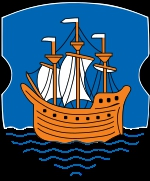

Prins av Minsk, Prins av Hrodno. Blev minst 57 år.
1110 Novgorod, Ryssland.
efter 1167 Novgorod, Ryssland.
Prince. Prince of Minsk (1151-67), Prince of Hrodno (1159-65). Volodar Glebovitj av Minsk var en furste av Minsk tillhörig den så kallade polotskdynastin (eller polovtserna) efter den vitryska staden och furstendömet Polotsk, varifrån den stammade. Han var son till Gleb Vseslavitj av Minsk (död 1119) och Anastasia Jaropolkova. Volodar dog efter 1167, möjligen 1176.
Volodars familj hade sedan längre tid varit i strid med storfursten av Kiev, Vladimir Monomach, vilken 1113 (enligt vissa uppgifter 1119) erövrat Minsk från Volodars far. Senare hade polotskdynastins återstående besittningar erövrats av Vladimirs son Mstislav Vladimirovisj och dess medlemmar tvingats i landsflykt till bland annat Konstantinopel. Efter Mstislavs död 1132 föll dock Kiev-riket sakta samman och polotskdynastin kunde återvända till den ryska politiska scenen.
Volodar gifte sig den 5 juni 1135 (troligen medan han befann sig i exil i Polen) med Rikissa av Polen, dotter till Boleslav III av Polen och änka efter den danske prinsen och kortvarige svenske kungen Magnus Nilsson av Danmark, vilken året innan stupat i slaget vid Fotevik. Volodar och Rikissa fick dottern Sofia av Minsk, vilken senare gifte sig med Valdemar den store av Danmark.
Volodars och Rikissas äktenskap var ett politiskt drag av hennes far riktat mot den dåvarande alliansen mellan Erik Emune av Danmark och Monomachs ättlingar. Sedan ett flertal centrala aktörer i denna konflikt dött och monomachernas ställning i Ryssland kraftigt försvagats föll också grunden för äktenskapet vilket upplöstes i skilsmässa varefter Rikissa gifte om sig med Sverker d.ä. av Sverige.